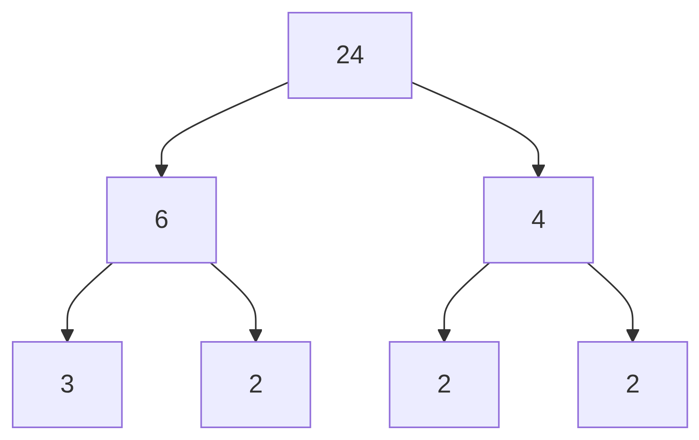
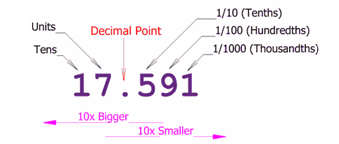

Glossary
Absolute value
The distance a number is from zero on a number line, always expressed as a positive number or zero.
Example:
The absolute value of
-7is7.
Algebra
Algebra is a branch of math that uses letters and symbols to represent numbers and relationships.
It lets us describe patterns, write rules, and solve problems that work in many different situations.
Calculus
Calculus is a branch of math that helps us understand change and motion.
It’s used to study how fast things move, how things grow or shrink, and how to find exact areas or curves.
Composite number
A composite number has more than two factors.
That means it can be divided evenly by numbers other than 1 and itself.
Example:
12 is composite because 2, 3, 4, and 6 all divide it evenly.
Convert
To convert means to change a number from one form to another — like turning a fraction into a decimal, or a percent into a fraction. The value stays the same, but the way it’s written changes.
Decimal
A decimal is a way to show part of a whole using the base-10 system. It uses a decimal point to separate whole numbers from fractional parts.
Each digit after the decimal point has a place value based on powers of 10:
The first place is tenths (0.1)
Then hundredths (0.01)
Then thousandths (0.001), and so on
Decimals are closely related to fractions and can often be converted back and forth.
Example:
0.3 means 3 tenths, or \(\frac{3}{10}\)
0.25 means 2 tenths and 5 hundredths, or \(\frac{25}{100}\)
Denominator
The denominator is the bottom number in a fraction. It tells how many equal parts the whole is divided into.
Example:
In the fraction 3/4, the denominator is 4.
Discount
A discount is a percent taken off the original price.
Example:
A 25% discount means the item costs 25% less than before.
Divisible
A number is divisible by another if it divides evenly — these rules help you check quickly.
- Divisible by 2: The number ends in 0, 2, 4, 6, or 8 (an even number).
- Divisible by 3: The sum of the digits is divisible by 3.
- Divisible by 4: The last two digits form a number divisible by 4.
- Divisible by 5: The number ends in 0 or 5.
- Divisible by 6: The number is divisible by both 2 and 3.
- Divisible by 9: The sum of the digits is divisible by 9.
- Divisible by 10: The number ends in 0.
Equation
An equation is a math sentence that says two things are equal.
It has an equals sign (=) and shows a relationship between numbers or expressions.
Examples:
2 + 3 = 5andx + 1 = 7
Equivalent
Two numbers, fractions, or expressions are equivalent if they have the same value, even if the look different.
Example:
The fractions \(\frac{2}{4}\) and \(\frac{6}{12}\) are equivalent because both simplify to \(\frac{1}{2}\).
The decimal for \(\frac{2}{4}\) can be found using a calculator by entering 1 ÷ 2, which gives 0.5
Likewise, \(\frac{6}{12}\), can be found by entering 6 ÷ 12, which also gives 0.5.
Even
A number is even if it can be divided by 2 with no remainder. Numbers like 2, 4, 6, 8, … are even. Numbers that are not even are called odd numbers.
Examples:
24 ÷ 2 is 12 with no remainder, so 24 is even.
35 ÷ 2 is 17 with a remainder of 1 so 35 is odd.
Expression
An expression is a math phrase made of numbers, variables, or both — but it doesn’t have an equals sign.
Examples:
3x + 27 − y5(a − 1)
Factor
A factor is a whole number that divides another number evenly — with no remainder.
If you can split something into equal groups with no leftovers, the group size is a factor.
Example:
3 is a factor of 12 because 3 × 4 = 12.
Factoring
Factoring means breaking something down into smaller parts that multiply together to make it.
Examples:
Factoring a number: 12 can be factored into
3 × 4or2 × 6.Factoring an expression:
x² + 5x + 6can be factored into(x + 2)(x + 3).
Factor tree
A factor tree is a way to break a number into its smallest building blocks — the prime numbers that multiply to make it.
You keep splitting the number into smaller factors until you can’t go any further.
Example:
Here is a factor tree for 24:
This tells us that the prime factorization of 24 is \(2^3 \cdot 3\).
Fraction
A fraction shows a part of a whole. It has a numerator (top number) and a denominator (bottom number).
The denominator tells how many equal parts the whole is divided into, and the numerator tells how many of those parts you have.
Example:
In 3/4, the fraction means 3 out of 4 equal parts.
Grade
A grade is a way to show how well someone did on a task, often written as a percent.
Example:
If you get 18 out of 20 points, your grade is \(18 \div 20 * 100 = 90\%\).
Greater than
A number is greater than (>) another number if it is further to the right on the number line.
Example:
5 > 3is truebut
3 > 5is false

Greatest Common Factor
The greatest common factor (GCF) is the biggest number that divides evenly into two or more numbers. It is the largest factor they have in common.
You can find the GCF by listing all the factors and finding the ones shared between the numbers.
Example:
The GCF of 18 and 24 is 6, because 6 is the largest number that goes into both 18 and 24 without a remainder.
Factors of 18: 1, 2, 3, 6, 9, 18
Factors of 24: 1, 2, 3, 4, 6, 8, 12, 24
Shared factors: 1, 2, 3, 6
The greatest is 6
Horizontal
Side to side, like the horizon. Level ground is horizontal.
Example:
This is a horizontal number line.
Integer
An integer is a whole number (not a fraction or decimal) that can be positive, negative, or zero.
Example:
-3,0,5, and100are all integers.
Less than
A number is less than (<) another number if it is further to the left on the number line.
Example:
3 < 5is truebut
5 < 3is false

Markup
Markup is a percent added to the cost of something to set the selling price. Businesses use markup to make a profit.
Example:
A store buys a backpack for $20. They want to make money, so they add a 50% markup.
To find the markup amount:
\[\text{Markup} = 0.5 \times 20 = 10\]
Then add it to the cost:
\[\text{Selling Price} = 20 + 10 = 30\]
So the store sells the backpack for $30.
Multiple
A multiple is what you get when you multiply a number by 1, 2, 3, and so on.
Example:
5,10,15, and20are all multiples of5.
Negative
A number is negative if it is less than zero.
On a number line, negative numbers are to the left of zero.
Example:
-4is a negative number.
Number line
A straight line used to show numbers in order. It usually has zero in the middle, with positive numbers to the right and negative numbers to the left.
Number lines help you visualize math operations and compare values.
Example:
-2,0, and3are all on the number line.

Number sense
Number sense is a person’s ability to understand, work with, and think about numbers.
In simple terms, it means having a good feel for how numbers work — like knowing:
- What numbers mean
- How they relate to each other
- How to break them apart or put them together
- What a reasonable answer might be
People with strong number sense can do mental math, estimate, recognize patterns, and spot when something “doesn’t make sense.”
It’s kind of like having a good instinct for numbers — not just memorizing rules, but really getting how numbers behave.
Numerator
The numerator is the top number in a fraction. It tells how many parts you have.
Example:
In the fraction 3/4, the numerator is 3.
Odd
A number is odd if dividing it by 2 leaves a remainder. Numbers like 3, 5, 7, 9, … are odd numbers. Numbers that are not odd are called even numbers.
Examples:
35 ÷ 2 is 17 with a remainder of 1 so 35 is odd.
24 ÷ 2 is 12 with no remainder, so 24 is even.
Opposite
Two numbers that are the same distance from zero on a number line, but on opposite sides.
Their sum is always zero.
Example:
-3and3are opposites.
Part
The part is the piece or portion of the total amount.
Example:
If 3 out of 5 students like pizza, the part is 3.
Percent
A percent is a number out of 100. It uses the percent symbol (%) and is another way to show part of a whole.
Example:
25% means 25 out of 100 parts.
Place Value
Place value tells you what each digit in a number means, based on its position. In a decimal like 0.4, the 4 is in the tenths place — it means 4 tenths. Each place to the right is worth ten times less than the one before it.
Example:

Positive
A number is positive if it is greater than zero.
On a number line, positive numbers are to the right of zero.
Example:
5is a positive number.
Prime Number
A number is prime if it has exactly two factors: 1 and itself.
Example:
2,3,5,7, and11are all prime numbers.
Prime factorization
Prime factorization means writing a number as a product of prime numbers.
Example:
18 = 2 × 3 × 3or2 × 3²
These are the prime building blocks of 18.
Product
A product is the result of multiplying two or more numbers.
Example:
The product of 4 and 6 is
24, because4 × 6 = 24.
Proportion
A proportion is a statement that two ratios or fractions are equal.
Example:
\(\frac{1}{2} = \frac{2}{4}\) is a true proportion.
Quotient
A quotient is the result of dividing one number by another.
Example:
The quotient of 20 divided by 5 is
4, because20 ÷ 5 = 4.
Rate
A rate compares two different types of quantities. It often uses the word per like in miles per hour or price per gallon.
Example:
Anne used 10 gallons of gas to drive 500 miles in her Prius Her gas mileage was $ 500 = 50 $
Ratio
A ratio compares two amounts or quantities, showing how much there is of one thing compared to another. It tells us about the relationship between the numbers.
There are three common ways to write a ratio:
Using a colon (like 2:3)
As a fraction (like \(\frac{2}{3}\))
Using the word “to” (like 2 to 3)
Example:
If you have 4 red balloons and 6 blue balloons: The ratio of red balloons to blue balloons is 4:6 or 2:3 (when simplified). This means for every 2 red balloons, there are 3 blue balloons.
Relatively prime
Two numbers are relatively prime if their greatest common factor is 1. That means they don’t share any factors other than 1 - even if neither number is prime.
Example:
8 and 15 are relatively prime because the only number that evenly divides both is 1.
Remainder
A remainder is what’s left over after dividing when the number doesn’t go in evenly.
Example:
10 ÷ 3 = 3with a remainder of1, because3 × 3 = 9and there’s1left.
Simplest form
A fraction is in simplest form (or lowest terms) when you cannot divide the top number (numerator) and the bottom number (denominator) by an common factor other than 1.
We write fractions in simplest form to make the numbers as “small” and easy to understand as possible without changing the value.
Example:
\(\frac{4}{8}\) is not in simplest form because both 4 and 8 can be divided by 4.
\(\frac{1}{2}\) is in simplest form because the only common factor for 1 and 2 is 1.
Simplify
To simplify a number or expression means to rewrite it in a cleaner or shorter way — without changing its value. In math, we often simplify fractions, expressions, or equations to make them easier to work with.
Example:
The fraction \(\frac{12}{20}\) can be simplified by dividing both the numerator and denominator by 4:
\[\frac{12}{20} = \frac{3}{5}\]
This simpler fraction means the same thing — it’s just written with smaller numbers.
Sum
A sum is the result of adding two or more numbers.
Example:
The sum of 7 and 8 is
15, because7 + 8 = 15.
Survey
A survey is a way to gather information by asking people questions. Surveys often report results using percents.
Example:
Mr. Ross’ gave a survey to his Algebra class that asked whether they like pineapple pizza. Of the 18 people in class, only 4 responded that the liked pineapple pizza. Mr. Ross reported that \(22.\overline{2}\%\) like pineapple on their pizza.
Vertical
Up and down, like a flagpole.
Example:
This is a vertical number line.

Whole
The whole is the total amount. It’s the full quantity before being divided into parts.
Example:
If someone eats 3 slices of a pizza cut into 8 slices, they ate \(\frac{3}{8}\) of the whole pizza.